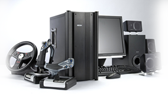

BİLGİSAYAR DONANIMI
Bilgisayar donanımı, bir bilgisayarı oluşturan fiziksel parçaların genel adıdır. Bu parçalar, kişisel bilgisayarlar, otomobiller, çamaşır makinesi ve benzeri elektrikli ev eşyaları veya çeşitli sanayi uygulamaları gibi birçok alanda kullanılır.
Günümüzde yaygın olarak kullanılan bilgisayarlara “Kişisel Bilgisayar” anlamında PC
adı verilmektedir. İlk PC, 1981 yılında IBM firması tarafından üretildi.
Bilgisayar sisteminin düzgün çalışabilmesi için gerekli olan, sabit disk, disket ve
CD/DVD sürücüleri, monitör, fare, vs. gibi her türlü fiziksel araca donanım (hardware) adı
verilir.
Bilgisayarı oluşturan parçaların içine takıldığı ve parçaları bir arada tutan metal kutuya
Bilgisayar Kasası adı verilmektedir. Kasalar şekil itibariyle iki çeşittir: Yatay kasalar (Slim
Case) ve Dik kasalar (Tower Case). Slim case ve tower case arasındaki fark kasanın birinde
dikey olarak monitörün yanında veya yerde, diğerinde de yatay olarak monitörün altında
durmasıdır. Bir bilgisayarı oluşturan donanım birimlerini incelerken kasanın içinde yer alanlar
(iç donanım) ve dışında kalanlar (dış donanım) diye ayıracağız.